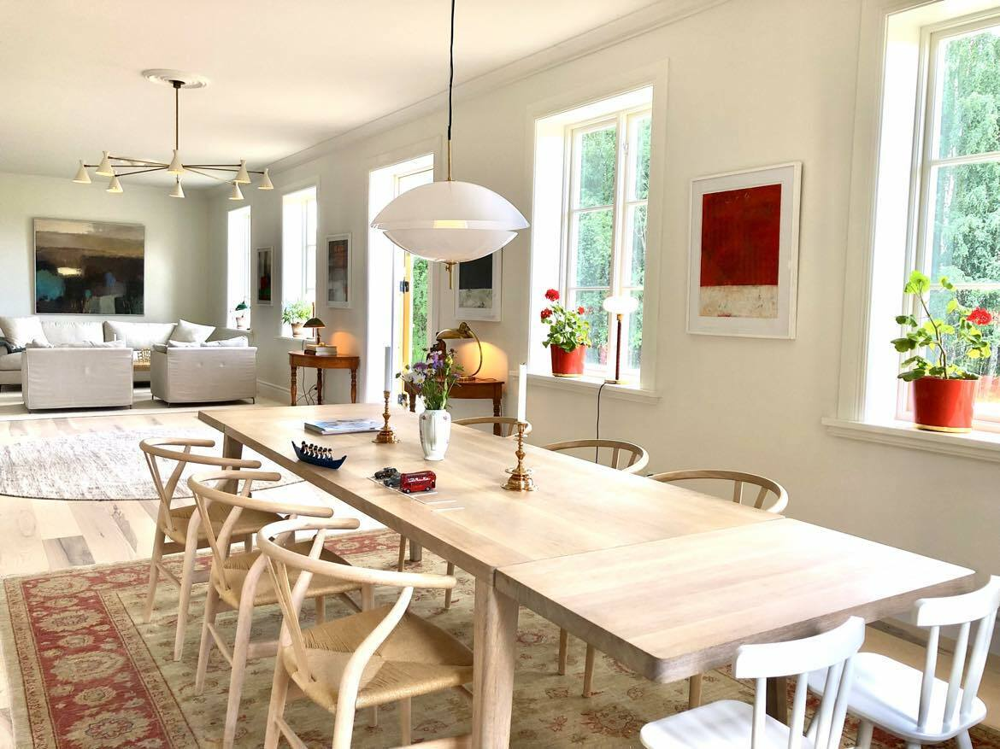
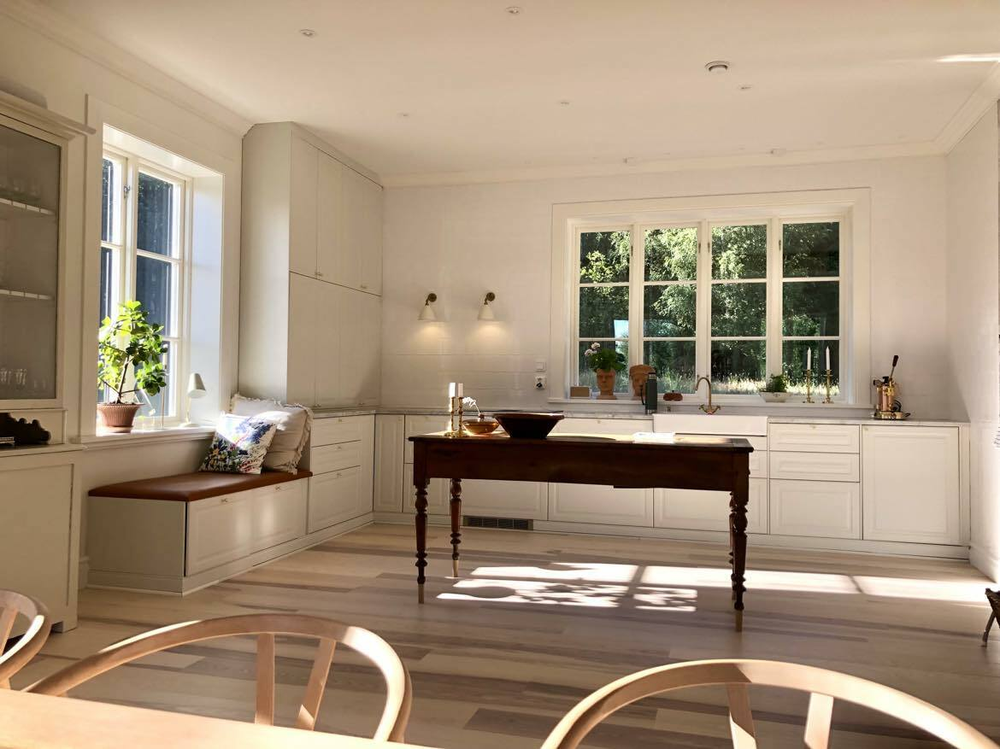

DALAKÅKEN.
Ett nytt hus med sekelskiftet i detaljerna.
BYGGT FÖR NU.
MED BLICKEN BAKÅT.
Idén var ett hus som skulle kännas som om det redan hade stått där i hundra år. Traditionella proportioner, noga valda material och nära samarbete med kunden gav Dalakåken sin karaktär.
Från grunden till taket fick varje beslut bidra till helheten.
Konstruktion
Diffusionsöppen lösning utan plast i väggar och tak. Cellulosaisolering.
Grund
Närmare 100 markskruvar, 120–180 cm långa.
Proportioner
Tre meters takhöjd på nedervåningen och 180 cm höga fönster.
Omfattning
Cirka 280 m² i projektbeskrivningen, inklusive en då planerad tillbyggnad på 40 m².

DET LOKALA
I DETALJERNA.
Fönster och dörrar från Allmogesnickerier i Leksand. Trälister, socklar och fönsterbänkar från Veckebo såg. Återbrukade innerpardörrar förstärker husets uttryck.
Mansardtaket täcks av tvåkupigt lertegel. De stora knutbrädorna ramar in fasaden.

PLATS FÖR
VARJE DAG.
Ikea-köket lackerades i Jotuns kulör 0486 Silke. Marmorbänkskivan kommer från stenskivor.se. Den centrala öppna spisen murades av Mikael Wigander.
Vattenburen golvvärme på nedervåningen och bergvärme står för uppvärmningen. Fasadlyktorna kommer från Kulturbelysning.
FÖLJ BYGGET I FILM.
Byggnadsbitens fyra filmer från Dalakåken.